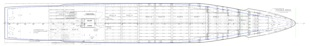

Using Virtual Vessels for Settlement and Trial
Most maritime cases involve massive structures of one kind or another and, all too often, juries, judges and mediators have little experience with maritime working environments. Accordingly, it becomes important to bring into a courtroom or mediation hearing, tools that give an accurate and favorable presentation of the facts at hand.
In many, if not most cases, the best way to accomplish this goal is found in the use of sophisticated computer modeling and animation techniques to create a three-dimensional scene that can be viewed from any angle or perspective. Whether the case involves an expanse of harbor waterfront or a commercial vessel, computer modeling can generate a virtual environment that can be navigated in real time.
LEFT: Photos of most large commercial vessels can be obtained from various sources on the Internet. ABOVE: When available, blueprints or diagrams can be very useful in creating an accurate computer model.
McGuinn, Hillsman & Palefsky has pioneered the use of high tech visualization in maritime cases. The examples on this page illustrate an approach that has proven extremely useful in a number of cases.
Working from photographs and blueprints, a complex 3D model of a vessel is created that can be animated to illustrate important features in design or operation. When necessary, a maritime engineer is retained to do real-world testing of a ship’s behavior
using a physical scale model floating in a controlled wave tank. In turn, this data can be used to animate the computer generated ship on a realistic ocean surface to accurately portray the ship’s motion and what its occupants encountered in heavy seas.
Additionally, the computer generated ship allows the trial attorney to conduct a virtual tour of the vessel to acquaint a jury or mediator with specifics important to a given case.